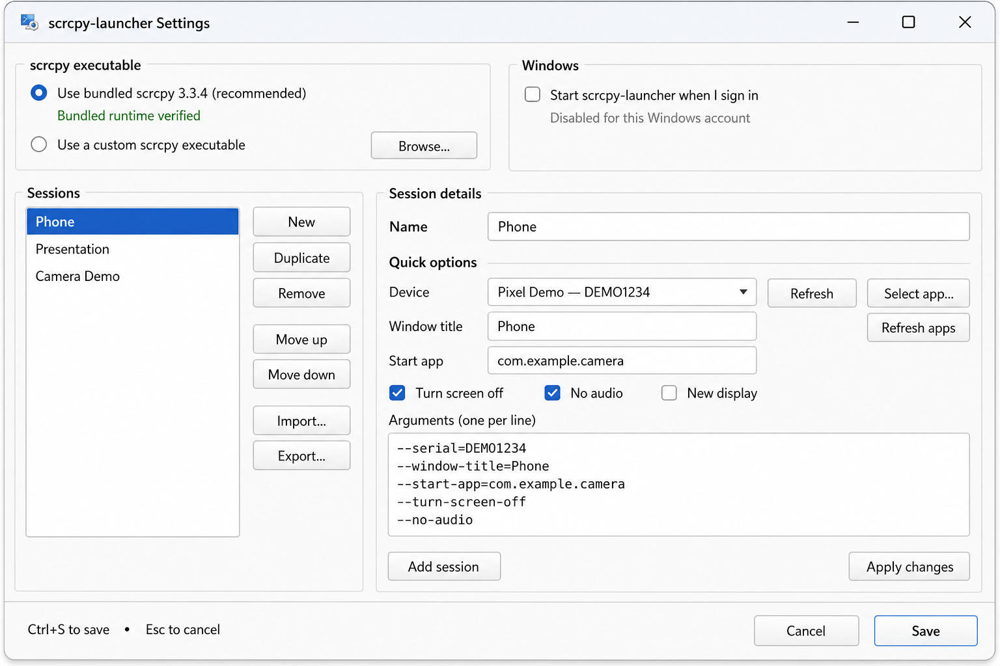
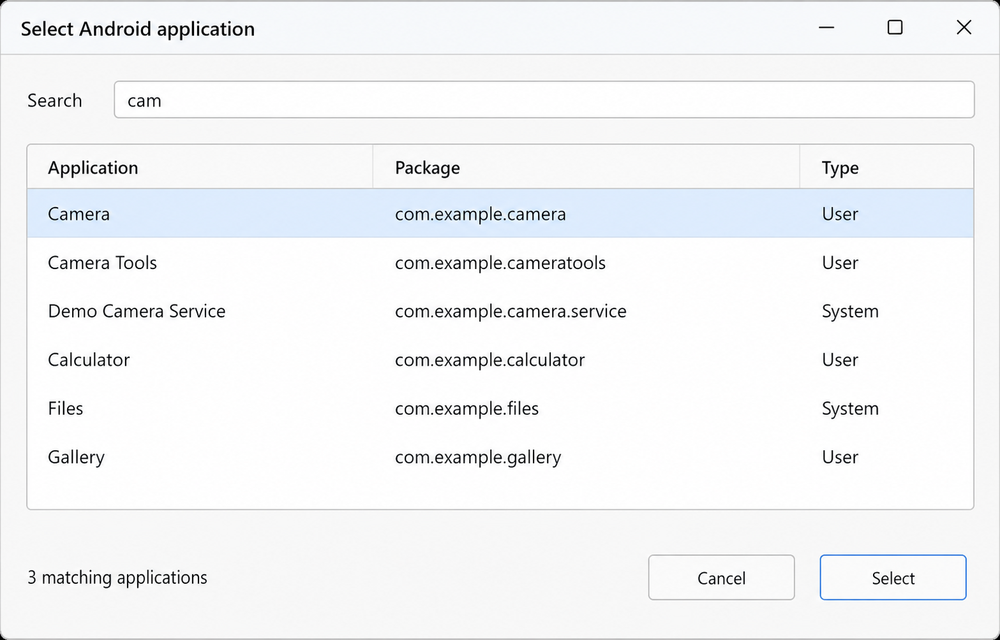

Keep separate setups for work, games, demos, or a particular device.
A calmer way to use scrcpy on Windows
Save the setup.
Launch the moment.
A Windows notification-area launcher for named, reusable Android screen-mirroring sessions.
Windows 11 · installer or portable ZIP · no account requiredLess repetition, more control
Your sessions, ready when you are.
Pick a device and app, set the window title, and save useful options.
Start quietly from the tray with configuration local to your PC.
Five-minute quick start
From download to first session.
- Download Choose the installer or portable ZIP.
- Connect Enable USB debugging and accept authorization.
- Save Create a session in Settings and click Save.
- Launch Choose your session from the tray.
See it in context
A focused little control center.


Installer or portable ZIP.
Every release page includes downloads and SHA-256 checksums.
Open latest release ↗The package includes official scrcpy 4.1 and ADB; see third-party notices.
scrcpy-launcher is independent and not the official scrcpy project.